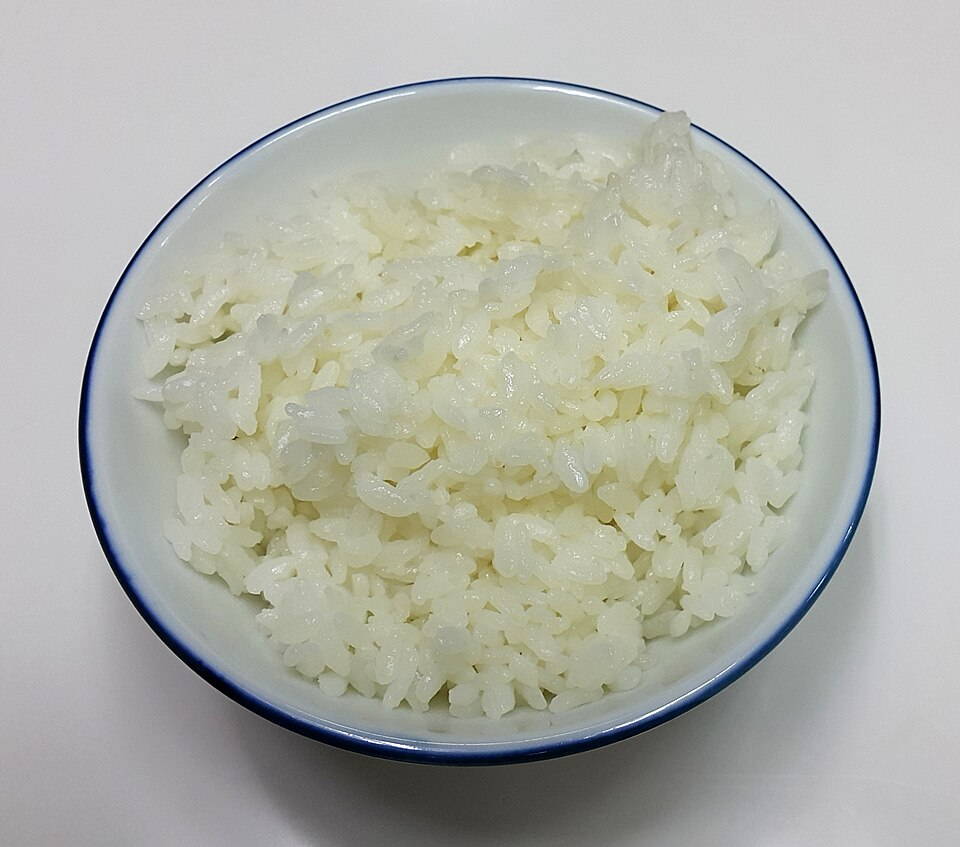

Side, Prep, Run Fuel, By Claude
Instant Pot rice (~6 cups cooked)
2 cups jasmine or basmati rice, rinsed until the water runs mostly clear
2 cups water (1:1 in the Instant Pot)
1/2 teaspoon kosher salt
Farro (~5 cups cooked)
1 1/2 cups semi-pearled farro
Large pot of salted water
Roasted potatoes (~6 portions)
3 lb Yukon Gold or baby potatoes, cut in 1 1/2-inch pieces
1 1/2 tablespoons olive oil
1 teaspoon kosher salt, pepper, optional rosemary or garlic powder
Cook carbs separately from the protein so you can scale portions to the day's training without cooking anything different. Make one or two of these on Sunday.
Rice: High Pressure 4 minutes, natural release 10 minutes. Fluff and spread on a sheet pan to cool quickly.
Farro: boil like pasta 25–30 minutes until chewy-tender, then drain well. It keeps 5 days and stays firm. A good base for grain salads.
Potatoes: toss with oil and seasoning and roast at 425°F 30–35 minutes, flipping once. Reheat in the air fryer (380°F, 5 minutes) to crisp them again.
Storage: fridge 4–5 days. Freeze rice flat in 1-cup bags for up to 3 months; microwave from frozen 2 minutes with a splash of water.
Portion guide (cooked, per meal), as a starting point: rest day 1/2 cup; easy run day 1 cup; long run day and the day before 1 1/2 cups or more. If you feel flat on runs, add carbs before you cut protein.
PER 1 CUP COOKED RICE: 205 CALORIES, 4G PROTEIN, 45G CARBS
PER 1 CUP FARRO: 220 CALORIES, 8G PROTEIN, 45G CARBS, 7G FIBER
PER 8 OZ ROASTED POTATO: 210 CALORIES, 4G PROTEIN, 38G CARBS
Photo: A bowl of rice.jpg by Douglas Perkins, CC0, via Wikimedia Commons. Representative image, not this exact recipe.